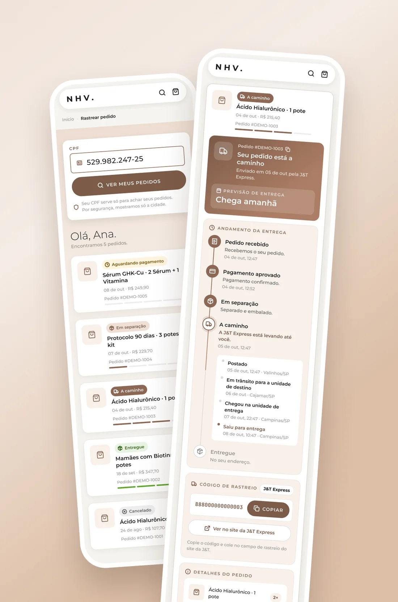
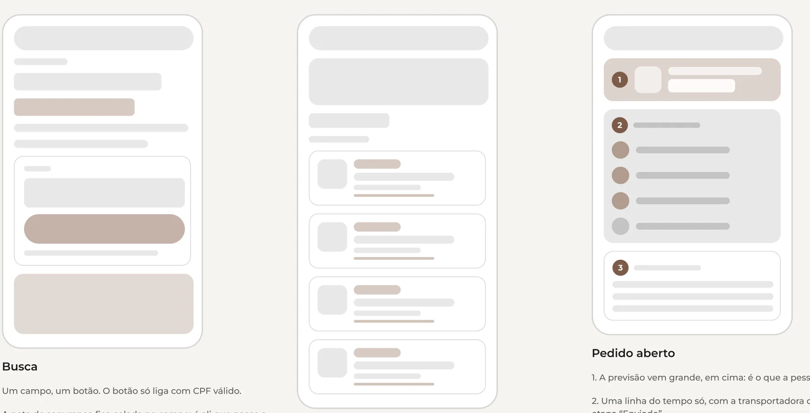
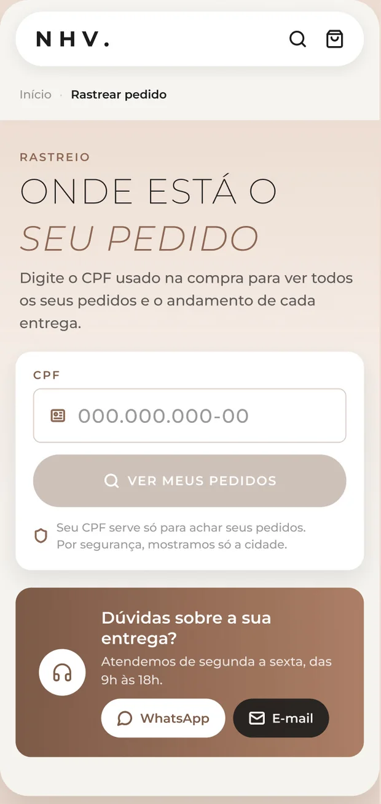
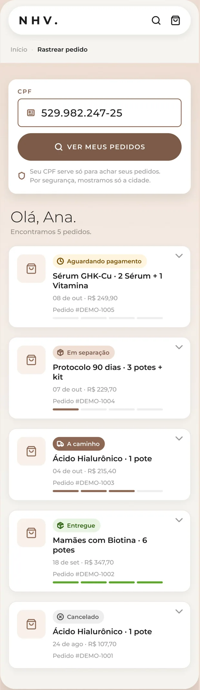
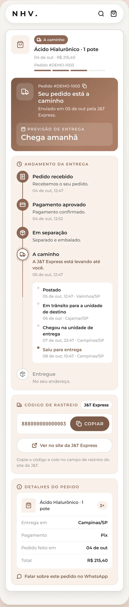
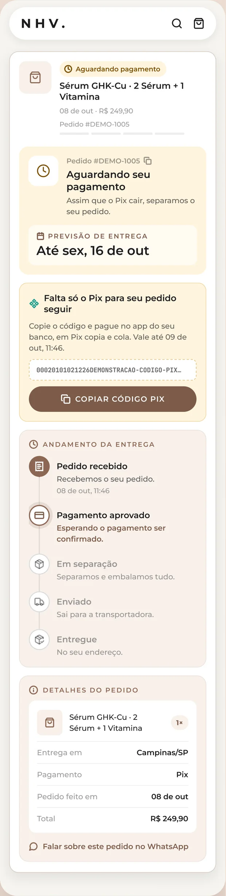
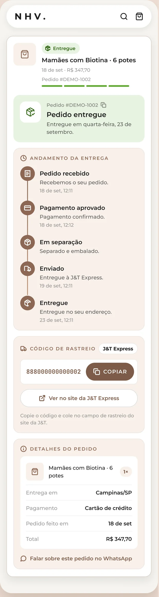
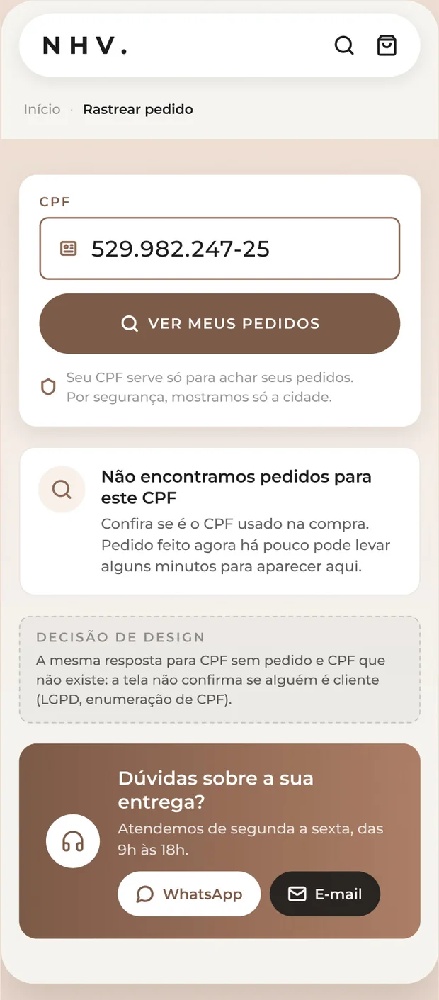
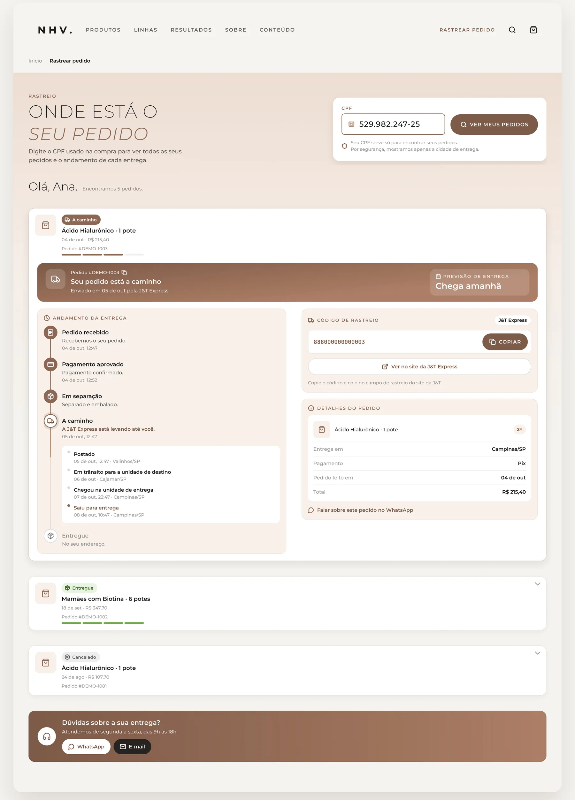
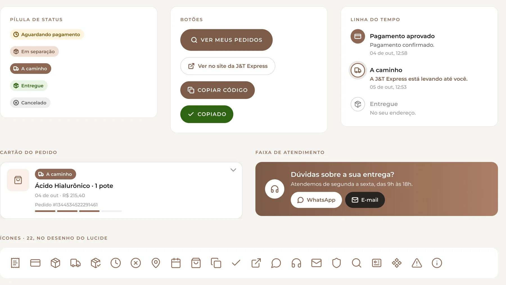

Rastreio
de pedido
Encontrar todos os pedidos só com o CPF e saber, em uma frase, onde cada um está e quando chega.
“Cadê o meu
pedido?”
É a pergunta mais repetida no atendimento de qualquer e-commerce. Na loja nova da New Hair não existia um lugar para a cliente acompanhar a entrega sem login.
O caminho era uma área de conta genérica, e o link de rastreio salvo no pedido nem sempre levava ao lugar certo.
- A cliente não sabe onde está o pedido e pergunta no WhatsApp.
- Rastrear exigia login, senha e o código certo da transportadora.
Achar todos os pedidos só com o CPF e entender em uma frase onde cada um está e quando chega.
- Menos contatos de “onde está meu pedido”.
- Uso da tela de rastreio.
- Pix pendente pago a partir da própria tela.
Como o mercado
resolve.
Olhei transportadoras e lojas que deixam rastrear sem login. O padrão: só CPF existe nas transportadoras, sempre com captcha. As lojas pedem um segundo dado e escondem dados pessoais.
O que levei: só CPF, como a cliente pediu, mas com a régua da Shopify. Mostrar o mínimo (cidade e primeiro nome), a mesma resposta para CPF com e sem pedido, e limite de buscas.
O dado manda
no desenho.
Três descobertas sobre os dados do pedido mudaram a tela.
A plataforma de pedidos busca por documento: dá para listar todos os pedidos de uma pessoa, filtrando pelo CPF exato.
Os eventos da transportadora não vêm pela API hoje. A linha do tempo foi desenhada para recebê-los quando a integração existir.
O pedido traz o código copia e cola e a validade. A tela vira um lugar para concluir o pagamento, não só para acompanhar.
Por que o Pix
entrou no rastreio.
Enquanto analisava o rastreio, fui olhar também os pagamentos. Revisitei os dados de quem comprava e de quem não comprava, pelo caixa da Yampi e não pelo pixel: 9.882 pedidos de agosto a novembro de 2026, separados por forma de pagamento.
Com cartão, quase todo pedido vira pagamento. Com Pix, que é metade dos pedidos, mais de 4 em cada 10 nunca são pagos. O problema não estava na tela do checkout, e sim no Pix que fica para depois. Levei esse dado para a equipe.
Pedidos pagos sobre pedidos criados, por forma de pagamento. Pix é 53% dos pedidos.
Ele aprovava 99% no cartão. Mexer na tela não traria o Pix de volta.
Com os números na mão, o time de CRM melhorou o fluxo de Pix abandonado. No rastreio, quem volta para saber do pedido encontra o Pix pendente com o código copia e cola e a validade.
Contra 44% no começo de agosto. A subida maior veio antes desta análise, por isso ela entra aqui como contexto, não como resultado meu.
O problema não era a tela do checkout. Era o Pix que ficava para depois.
Primeiro a ordem,
depois a cor.
Três telas em cinza para validar a hierarquia no celular. A cliente quer saber, nessa ordem: quando chega, onde está e os detalhes.

- BuscaUm campo, um botãoO botão só liga com CPF válido. A nota de segurança fica colada no campo: é ali que nasce a dúvida.
- ListaO produto é o destaqueNão o número de 16 dígitos. Pílula de status e barrinha de 4 etapas: dá para ler sem abrir.
- PedidoA previsão vem em cimaÉ o que a pessoa veio ver. Depois, uma linha do tempo só, e código, endereço e itens por último.
Quatro versões
até a final.
Cada rodada de feedback virou uma versão nova, já com os dados reais do pedido.
Busca por CPF, lista de pedidos e linha do tempo.
Os eventos da transportadora entram dentro de “Enviado”. Ícones em cada etapa e a situação no topo do pedido.
Caramelo e nudes da marca, título em itálico. Produto como destaque, pílula com ícone, botões de 44 px.
Previsão grande (“Chega amanhã”), painéis e faixa de atendimento em caramelo cheio. Ajustes finos no pé e na nota do CPF.






No desktop, o título
ao lado da busca.
Na tela larga, o pedido aberto ganha duas colunas: a linha do tempo à esquerda, o código e os detalhes à direita.
Cada peça é um componente com variantes no Figma, com os mesmos nomes e cores usados no desenvolvimento: pílula de status nos 5 estados do pedido, botões (incluindo o estado “copiado”), etapa da linha do tempo feita, atual e pendente, cartão do pedido, faixa de atendimento e 22 ícones no desenho do Lucide.


No ar, com
dados reais.
- Rastreio só com o CPF, publicado na loja nova.
- Todos os estados: Pix pendente, separação, a caminho, entregue, cancelado, sem pedidos, erro e limite.
- Design system com tokens, componentes e ícones.
- Segurança: só cidade, a mesma resposta para CPF sem pedido, limite de buscas.
- O Pix pendente dentro do rastreio: acompanhar vira também concluir o pagamento.
- Uma linha do tempo só, com a transportadora dentro dela.
- Eventos da transportadora em tempo real, pela integração interna.
- Aviso de “saiu para entrega”.
- Medir os contatos de rastreio no atendimento antes e depois.
Acessibilidade (WCAG AA), conferida na tela no ar:
Próximo ajuste: os botões do modo de demonstração e o do WhatsApp têm 36 a 40 px de altura, abaixo dos 44 px recomendados para toque.
Busque um
pedido.
A tela no ar, em modo de demonstração: escolha um cenário (Pix pendente, a caminho, entregue) e busque. Os dados são fictícios, nenhum pedido real aparece.
Entenderam
sem explicação.
Mostrei a tela no ar para as mesmas 4 mulheres, duas delas clientes da New Hair, e perguntei o que precisavam fazer ali, só olhando.
Foi a experiência mais fácil para 3 das 4. “Tem uma função só.” (61 anos)
3 de 4 queriam saber por que o CPF é pedido e como os dados são protegidos antes de digitar.
Sem buscar, não sabiam que a tela mostra a linha do tempo, a transportadora e a previsão. Uma pediu um botão grande para o WhatsApp.